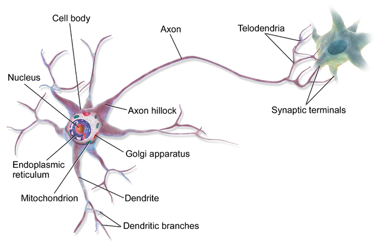
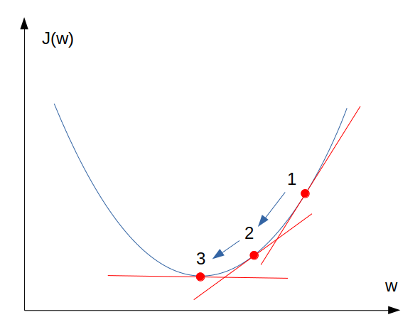

โดย ชิตพงษ์ กิตตินราดร | มกราคม 2563
Artificial neural network เป็น Algorithm หลักของการเรียนรู้แบบ Deep learning ซึ่งเป็นแนวทางการเรียนรู้แบบหนึ่งของ Machine learning
หลายคนคงเคยได้ยินมาว่า Deep learning ในปัจจุบันนั้นมีความสามารถมาก เช่นสามารถพยากรณ์มะเร็งจากภาพ X-ray ได้แม่นยำกว่าแพทย์ สามารถแยกแยะหน้าคนว่าใครเป็นใคร สามารถอ่านป้ายจราจรจากภาพถ่าย แยกเสียงพูดออกจากเสียงดนตรี เล่นหมากล้อมชนะแชมป์โลก ไปจนถึงการสร้างภาพดาราที่ไม่มีตัวตนจริง จะเห็นว่าความสามารถเหล่านี้ล้วนมีจุดร่วมกันอยู่หนึ่งอย่าง นั่นคือข้อมูล Input ที่ป้อนเข้า Deep learning algorithm มักจะเป็นข้อมูลแบบที่ไม่มีโครงสร้าง หรือที่เรียกว่า Unstructured data เช่น ภาพ ข้อความ เสียง ในขณะที่ Machine learning algorithm ทั่วไปมักจะเหมาะสมกับข้อมูลแบบ Structured data ที่มีโครงสร้างเป็นตาราง
อะไรคือสิ่งที่ทำให้ Neural network สามารถเรียนรู้จากข้อมูลที่ไม่มีโครงสร้างได้ดีกว่าวิธีอื่นๆ คำตอบอยู่ที่โครงสร้างการเรียนรู้ (Learning architecture) ของ Neural network ต่างจากโครงสร้างการเรียนรู้ของ Machine learning algorithm แบบทั่วไป
เรามาลองทำความเข้าใจโครงสร้างของการเรียนรู้ทั้งสองแบบกันว่าต่างกันอย่างไร
ใน Machine learning algorithm ทั่วไป เช่น Linear regression และ logistic regression โครงสร้างการเรียนรู้เป็นดังนี้:
จะเห็นว่ามี 3 ส่วน คือ Input, Classifier, และ Prediction
1) Input คือข้อมูลที่ป้อนเข้า Algorithm เช่นในกรณีนี้มี 3 Feature ได้แก่ , , และ
2) Classifier คือฟังก์ชันที่นำเอา Input มาคำนวนร่วมกับค่าน้ำหนัก ของ แต่ละตัว ผลที่ได้เรียกว่า แล้วป้อน เข้าสู่ฟังก์ชันตัดสินใจ เช่น Sigmoid function เพื่อคำนวนความเป็นไปได้ของคำตอบ
3) Prediction คือการตีความคำตอบของ Classifier แล้วนำเสนอผลลัพธ์ให้ผู้ใช้ เช่นคำถาม Binary classification ก็ให้คำตอบว่า "ใช่" หรือ "ไม่ใช่"
ในขณะที่ Neural network มีโครงสร้างการเรียนรู้ดังนี้:

จะเห็นว่ามี 4 ส่วน คือ Input layer, Hidden layer, Output layer, และ Prediction โดยเราจะอธิบายการทำงานทีละส่วน อนึ่ง เราเรียกกระบวนการที่ทั้ง 4 ส่วนนี้ทำงานต่อเนื่องกันจากด้านซ้ายไปด้านขวาของโครงสร้าง Neural network ว่ากระบวนการแผ่กระจายเดินหน้า หรือ Forward propagation ซึ่งทำงานร่วมกับการแผ่กระจายย้อนกลับ หรือ Backward propagation ซึ่งจะอธิบายภายหลัง
แต่ก่อนที่จะรู้จัก Forward propagation หลายคนอาจจะเคยได้ยินหรือเคยตั้งคำถามว่า Artificial neural network นี้มีความเหมือนหรือต่างกับการทำงานของสมองหรือไม่อย่างไร เราลองมาดูภาพ Neuron ในสมอง ซึ่งเป็นหน่วยที่รับ ประมวลผล และส่งข้อมูลไปยังส่วนอื่นๆ:

ภาพจาก BruceBlaus - Own work, CC BY 3.0
หากจะเปรียบเทียบ โครงสร้างที่เห็นคือ Neuron ซึ่งรับข้อมูลมาจาก Dendrite แล้วส่งข้อมูลออกไปยัง Neuron ตัวถัดไปผ่าน Axon โดย Neuron แต่ละตัวจะรับและส่งข้อมูลกับ Neuron อื่นๆ หลายตัว ปัจจุบันเรายังไม่มีความเข้าใจดีนักว่าโครงสร้างนี้มีความหมายต่อกระบวนการเรียนรู้ของมนุษย์อย่างไร แต่ถ้าจะให้คาดเดา ก็ดูเหมือนว่าโครงสร้างที่มีการเชื่อมโยงกันเป็นเครือข่ายแบบนี้น่าจะทำให้สมองมีความสามารถในการประมวลผลข้อมูลที่รับมา กลายเป็นการตัดสินใจทั้งระดับร่างกายและจิตใจได้ Artificial neural network ได้รับแรงบันดาลใจมาจากโครงสร้างนี้ ถึงแม้กลไกการทำงานไม่จำเป็นต้องเหมือนกันก็ตาม
สมมุติว่า Algorithm มี Parameter และ ที่เป็นตัวแทนของข้อมูลเรียบร้อยแล้ว กระบวนการ Forward propagation คือการนำข้อมูล เข้ามาประมวลผลร่วมกับ Parameter เหล่านั้นเป็นชั้นๆ จนได้คำตอบ
อย่างไรก็ตาม ในตอนเริ่มต้น โมเดลจะยังไม่มี Parameter ที่ถูกต้อง เราจึงต้องสุ่มค่าเริ่มต้นของ Parameter ขึ้นมาก่อน เมื่อ Forward propagation ทำงานจบ 1 เที่ยว ก็จะเปรียบเทียบผลการพยากรณ์กับคำตอบที่รู้อยู่แล้ว จากนั้นโมเดลจะใช้กระบวนการตรงกันข้าม คือ Backward propagation ในการปรับค่า Parameter ให้สะท้อนข้อมูลใน Train set มากขึ้น ทำอย่างนี้หลายๆ รอบจนกระทั่งได้ความแม่นยำของโมเดลตามที่ต้องการ อนึ่งเราเรียกการทำงานไป-กลับแต่ละรอบว่า 1 Epoch (ภาษาไทยอาจแปล Epoch ว่า "กัป" ซึ่งฟังดูยิ่งใหญ่ดี แต่อาจจะไม่เหมาะกับบริบทนี้ จึงขอใช้ Epoch คำเดิม)
Forward propagation มีกระบวนการดังนี้:
1) Input layer คือข้อมูลขาเข้า ถ้าเป็นข้อมูลแบบมีโครงสร้าง แต่ละตัวจะแทน Feature หรือคอลัมน์ของข้อมูล เช่น อายุ เพศ รายได้ เป็นต้น
แต่ถ้าเป็นข้อมูลแบบไม่มีโครงสร้าง เช่นรูปภาพ แต่ละตัวจะแทนค่าความสว่างของภาพ 1 Pixel ดังนั้น ถ้าเรามีภาพขาวดำขนาด 64 คูณ 64 Pixel เราจะได้จำนวน Input แต่ถ้าเป็นภาพสี ต้องคูณ 3 เข้าไป เพราะภาพสีแต่ละ Pixel จะมีข้อมูลความสว่าง 3 สี คือ Red, Green, Blue
2) Hidden layer คือชั้นประมวลผลที่ซ่อนอยู่ ซึ่งมีได้หลายชั้น (จากตัวอย่างแสดงชั้นเดียว) ใน Hidden layer แต่ละชั้นจะมีหน่วยประมวลผลที่เรียกว่า Neuron โดยในภาพมี 4 Neuron
หน้าที่ของ Neuron แต่ละตัว คือการรับข้อมูล Input "ทุกตัว" จาก Layer ก่อนหน้า มาประมวลผลโดยใช้ Linear function ร่วมกับค่าน้ำหนัก ของ Input แต่ละตัว ซึ่งให้ผล แล้วนำ ไปคำนวนใน Activation function ซึ่งอาจจะเป็น Sigmoid, Tanh, หรือ RELU ก็ได้ คำตอบที่ได้เรียกว่า สังเกตว่ากระบวนการนี้คล้ายกับขั้นตอน Classifier ของ ML algorithm ทั่วไป สิ่งที่ต่างคือชื่อเรียก สัญลักษณ์ที่ใช้แทน และจำนวน Neuron ที่มีมากกว่า 1
เราสามารถเขียนขั้นตอนนี้เป็นสมการได้ดังนี้:
สำหรับ แต่ละรายการ:
โดยก่อนจะไปไกลกว่านี้ มาทำความคุ้นเคยกับสัญลักษณ์แทนลำดับที่ของสิ่งต่างๆ ในโมเดลกันก่อน:
สิ่งสำคัญที่ต้องรู้ในขั้นนี้ คือ Hidden layer สามารถมีได้หลายชั้น เช่นถ้าหากมีชั้นที่ 2 สมการที่ (1) ก็จะนำ มาแทน และใช้ และ ของ Layer ที่สอง ดังนั้นเราสามารถเปลี่ยนรูปสมการที่ (1) และ (2) ให้เป็นรูปทั่วไปได้ดังนี้ (Vectorised form):
โดย คือลำดับที่ของ Layer ซึ่งนับ 1 ที่ Hidden layer ที่ 1
คำว่า Deep ใน Deep learning ก็มาจากการที่โมเดลมี Layer หลายชั้นในการประมวลผลนั่นเอง
3) Output layer คือชั้นที่ประมวลผล Activation ทั้งหมดจากชั้นก่อนหน้า โดยถือว่า คือ Input ร่วมกับค่าน้ำหนัก ของ ในชั้นก่อนหน้า (ไม่ใช่ของ ในชั้นแรก) ได้ผลเป็น แล้วนำ ไปคำนวนใน Activation function เช่น Sigmoid function ได้ผลเป็น
เขียนเป็นสมการได้ดังนี้ (สังเกตว่าสอดคล้องกับสมการที่ (3) และ (4)):
หรือเขียนเป็นรูปทั่วไป (Vectorised) คือ:
โดย คือจำนวน Layer ทั้งหมด ดังนั้นจึงหมายถึง Layer สุดท้าย ส่วน ก็คือ Layer รองสุดท้าย
เพื่อความเข้าใจที่ดีขึ้น จะนำเสนอให้ดูว่าข้อมูลและตัวแปรแต่ละตัวใน Neural network มีหน้าตาอย่างไรในรูปแบบ Matrix และ Vector
สมมุติว่าเรามีข้อมูลดังนี้: Feature จำนวน รายการ:
มิติของ Matrix X คือ
เราจะใช้ข้อมูลชุดนี้ใน Neural network ขนาด Layer โดยมีจำนวน Neuron ใน Layer แรก Neuron ส่วน Layer ที่สองเป็น Output layer ดังนั้นจึงมี
ค่าน้ำหนัก จะต้องคูณแบบ Dot product กับ ได้ ดังนั้นจึงมีมิติ :
เมื่อ อยู่ในมิติ ดังนั้น จึงจะต้องอยู่ในมิติ จึงจะสามารถบวกเข้าไปสมการได้:
เราต้องการ ดังนั้น จึงต้องมีมิติ :
ส่วน ก็มีมิติ เหมือน เพราะเป็นการนำ มา Apply activation function ด้วยการ Broadcast ฟังก์ชันเข้าไปใน Matrix:
4) Prediction นำเอาผล Activation ของ Output layer มาตัดสินใจใน Decision function เพื่อพยากรณ์ เขียนเป็นสมการได้ดังนี้:
ย้อนกลับมายังคำถามตั้งต้น ว่าทำไม Neural network จึงทำงานได้ดีกับข้อมูลแบบที่ไม่มีโครงสร้าง ลองพิจารณาดังนี้:
ทบทวนอีกครั้งว่ากระบวนการทั้งหมดนี้ เรียกว่า Forward propagation ซึ่งจบลงด้วยการได้ค่าพยากรณ์ แต่แน่นอนว่าเมื่อเรายังไม่มี Parameter และ ที่ถูกต้อง ค่าที่พยากรณ์ได้ก็จะไม่ตรงกับความจริง ดังนั้นเราจะใช้กระบวนการ Backward propagation ในการปรับแต่ง Parameter ให้เป็นตัวแทนของข้อมูลได้เที่ยงตรงยิ่งขึ้น
บางคนอาจจะเคยได้ยินว่า Backward propagation คือส่วนที่ซับซ้อนและยากที่สุดของ Neural network algorithm ซึ่งอาจจะจริงในส่วนของการคำนวน แต่โดยหลักคิดแล้วไม่ได้ยากขนาดนั้น เรามาลองทำความเข้าใจกันดู
ทบทวนว่า กระบวนการ Forward propagation จบลงที่เราได้ค่าพยากรณ์ ดังนั้นสิ่งต่อไปที่เราต้องทำ คือการนำค่าพยากรณ์นั้นมาใส่ใน Cost function เพื่อหาความต่างระหว่างค่าพยากรณ์กับค่าจริง โดยสำหรับ Neural network เราจะใช้ Cost function ลักษณะเดียวกันกับ Logistic regression คือ:
สมมุติว่า :
อนึ่ง หากใครสนใจ เราสามารถเขียนโค้ดของ Cost function โดยใช้ numpy ช่วย Vectorise เพื่อให้สามารถคำนวน Cost function ของรายการข้อมูลทั้งหมดได้อย่างรวดเร็วโดยไม่ต้องใช้ For loop โดยเขียนได้ดังนี้:
logprobs = np.multiply(np.log(A2),Y) + np.multiply(np.log(1-A2),1-Y)
cost = (-1/m)*np.sum(logprobs)
สิ่งต่อไปที่เราจะทำ คือเราจะหาว่า Parameter ที่ทำให้ Cost function มีค่าต่ำที่สุด โดยใช้กระบวนการ Gradient descent ซึ่งมีหลักการคือ:
1) หาอนุพันธ์ของ Parameter เช่น เมื่อเปรียบเทียบกับ Cost function :
2) นำอนุพันธ์ที่ได้ไปลบออกจาก Parameter นั้น โดยควบคุมความเร็วในการลบด้วย Learning rate แล้วนำ Parameter ใหม่ไปคำนวนใน Forward propagation จะได้ Cost function ที่มีค่าลดลง ทำซ้ำขั้นตอนนี้ไปเรื่อยๆ จน Cost function มีค่าต่ำที่สุดที่จะเป็นไปได้:
ทำซ้ำจนกระทั่งผลลัพธ์ล่าสุดไม่เปลี่ยนแปลงจากผลลัพธ์ครั้งก่อน:
กระบวนการดังกล่าวแสดงเป็นภาพได้ดังนี้:

ที่อธิบายไป เป็นภาพรวมของกระบวนการ แต่ใน Neural network เรามี Parameter หลายตัวและหลายชั้น ดังนั้นเราจึงต้องใช้หลายสมการในการหาอนุพันธ์ของ Parameter แต่ละตัว
โดย Parameter ที่ต้องหาอนุพันธ์ คือ Parameter ที่ส่งผลต่อค่าพยากรณ์ ได้แก่:
จะไม่แสดงวิธีการหาอนุพันธ์ของ Parameter แต่ละตัว เพราะยุ่งยากซับซ้อนค่อนข้างมาก แต่จะแสดงให้เห็นเลยว่าอนุพันธ์ของแต่ละ Parameter คืออะไร:
สมมุติว่า :
ทั้งนี้จะไม่แสดงวิธีคิดแบบ Vectorised เพราะอยากเน้นให้เข้าใจหลักการมากกว่า ส่วนในทางปฏิบัติให้ใช้ Framework อย่าง Tensorflow จะสะดวกกว่ามาก
สังเกตว่าเราหาอนุพันธ์ของ เช่น และ เพื่อเป็นอนุพันธ์ตั้งต้นให้หาอนุพันธ์ของ และ ได้ตามที่เขียนไว้ข้างต้น
เมื่อเราได้อนุพันธ์ทั้ง 6 ตัว (สำหรับโมเดลความลึก 2 ชั้น ถ้า 3 ชั้นก็ต้องเพิ่มอีก 3 ตัว) เราก็จะเอาอนุพันธ์ของ และ ไปอัปเดตค่าตัวแปรทั้งสอง โดยทำดังนี้:
แล้วนำตัวแปรที่อัปเดตแล้วไปคำนวน Forward propagation ใน Epoch ใหม่ แล้วคิดอนุพันธ์ นำอนุพันธ์มาอัปเดตตัวแปร ทำอย่างนี้ซ้ำไปเรื่อยๆ จนถึงจุดที่ Cost function มีค่าต่ำที่สุด ก็จะได้โมเดลที่ฟิตกับ Train set ที่ดีที่สุดเท่าที่จะเป็นไปได้
มาถึงจุดนี้ ก็คงพอเข้าใจแล้วว่า Neural network ทำงานอย่างไร และเรียนรู้อย่างไร เรื่อง Neural network นี้มีรายละเอียดและวิธีการประยุกต์ใช้มากมาย ซึ่งจะค่อยๆ อธิบายในบทอื่นๆ
ส่วนในบทต่อไป เราจะเริ่มทดลองสร้างโมเดล Neural network และพยากรณ์ โดยใช้ Framework อย่าง Tensorflow และ Keras
หน้าแรก | บทที่ 12 Clustering | บทที่ 14 Neural Network Programming